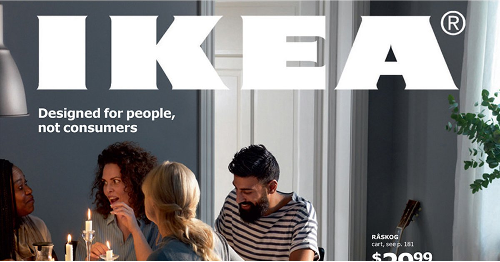
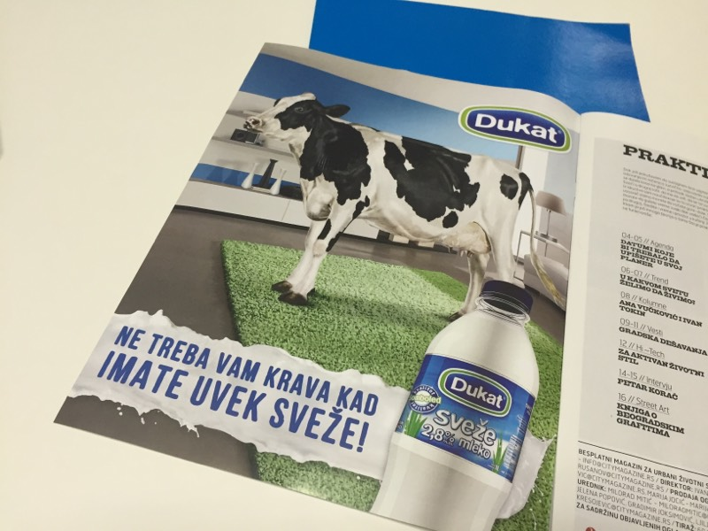
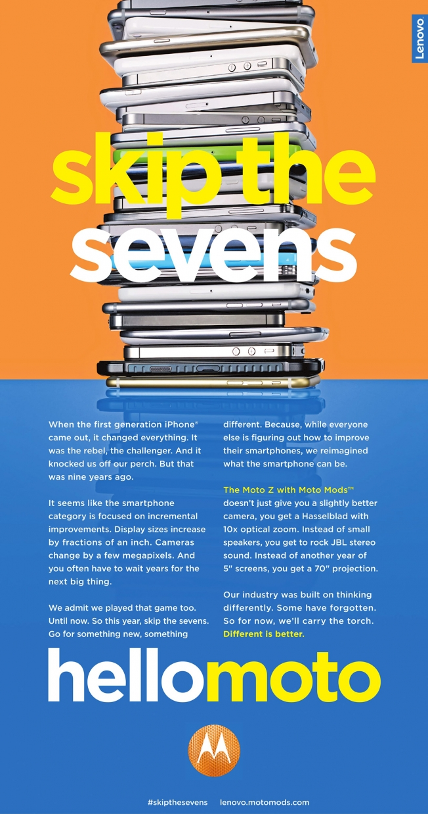

Septembar 20, 2016
5 MARKETING CRTICA #15
01 People-centric opet
Beneton, Ikea, samo su neki od brendova koji ove godine vraćaju pažnju na čoveka iza potrošača. Sa različitim značenjima, ali sa sličnim porukama, oba brenda kreću u nove kampanje sa krajnje personilzovanim tonom. Beneton sa sloganom “Clothes for humans" i IKEA sa kampanjom za novi katalog i sloganom: “Designed for people, not consumers”. Potraga za ljudskim bićem i individuom u masi potrošača se nastavlja.

02 Krave gde god se okreneš
Da li je krava trend životinja ove sezone? Ili samo slučajnost da u isto vreme krenu dve vizuelno slične kampanje sa ogromnim kravama kao glavnim momentima vizuala. Prva za voćno mleko Milky Juice by Nectar, a druga za Dukat sveže mleko. Bilo bi zanimljivo da još jedna mlekara ovih dana krene sa kampanjom :)
03 Jelen pivo limited edition
Jelen sa jednim rogom na pivskoj flaši uoči Paraolimpijskih igara, i to na svakoj desetoj - što je i simbolično procenat ljudi u Srbiji sa invaliditetom. Iako deluje mala i neprimetna brend intervencija, ideja je ogromna. Bravo kolege!
04 Najidiotskiji PR tekst ikada
Slučajno obrnem i prelistam kao i uvek City Magazine, štampano izdanje i na kraju na letim na PR tekst o naravno “genijalnom” citylight rešenju Voda Vode koje žubori. I pored toga što je potpuno pogrešno u City Magazinu plasirati tekst koji interesuje nas 1000 iz advertajzing industrije, i što je idiotska ideja da predstavljaš citylight u štampanom magazinu, i potrošiš pare za to, a ne na neko uspešnije angažovanje svojih potrošača, naleteh i na deo rečenice: “ako spadate u pasionirane ljubitelje inovacija u outdoor oglašavanju”??!

05 Sedmica
Za sve je kriva sedmica. Iphone, Samsung, a onda su se nadovezali i ostali. Lenovo (Motorola) je ove nedelje imao najuspešniji i najbrutalniji pokušaj skretanja pažnje sa pomenutih "sedmica" na svoj novi model telefona oglasom iz serije uporednog oglašavanja i sloganom: Skip the sevens / Preskoči sedmice. Bravo za copywritera koji stoji iza slogana!
